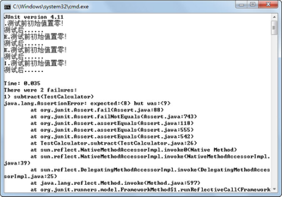
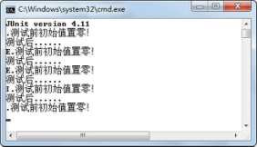
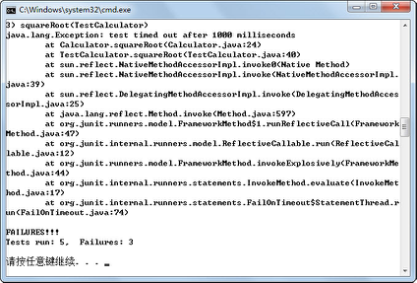
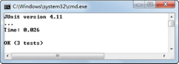

9.3 JUnit4应用
接下来通过对一个“计算器”类进行单元测试，来发现“计算器”类编写过程中出现的缺陷。
9.3.1 “计算器”类测试
该“计算器”类功能简单，仅操作整数，并把运算结果存储在一个静态变量中。另外，这个“计算器”类有如下预设的错误。
（1）减法并不返回一个有效的结果。
（2）乘法还没有实现。
（3）开方方法中存在一个无限循环错误。
具体代码如下：
public class Calculator{
//存储运算结果的静态变量
private static int result;
//加法
public void add(int n){
result = result + n;
}
//减法，有错误，应该是“result = result - n”
public void subtract(int n){
result = result - 1;
}
//乘法，此方法尚未实现
public void multiply(int n){}
//除法
public void divide(int n){
result = result / n;
}
//平方
public void square(int n){
result = n * n;
}
//开方,有死循环错误
public void squareRoot(int n){
for(;;){}
}
//清除结果
public void clear(){
result = 0;
}
//获取运算结果
public int getResult(){
return result;
}
}
使用JUnit4对“计算器”类进行单元测试，具体代码如下（本段代码中没有添加任何注释，希望大家在没有注释的情况下，尝试理解代码的含义）：
import static org.junit.Assert.*;
import org.junit.*;
public class TestCalculator{
Calculator calc = new Calculator();
@Before
public void setUp() throws Exception {
System.out.println("测试前初始值置零！");
calc.clear();
}
@After
public void tearDown() throws Exception {
System.out.println("测试后......");
}
@Test
public void add(){
calc.add(2);
calc.add(3);
int result = calc.getResult();
assertEquals(5, result);
}
@Test
public void subtract(){
calc.add(10);
calc.subtract(2);
int result = calc.getResult();
assertEquals(8, result);
}
@Test
public void divide(){
calc.add(8);
calc.divide(2);
assert calc.getResult() == 5;
}
@Test(expected = ArithmeticException.class)
public void divideByZero(){
calc.divide(0);
}
@Ignore("not Ready Yet Test Multiply")
@Test
public void multiply(){
calc.add(10);
calc.multiply(10);
int result = calc.getResult();
assertEquals(100, result);
}
}
下面对这个单元测试类中用到的技术类进行解释。
- 断言
在 JUnit4 中，新集成了一个 assert 关键字（见案例中的 divide()方法），我们可以像使用assertEquals()方法一样来使用它，因为它们都抛出相同的异常java.lang.AssertionError。
在JUnit4中，还引入了两个新的断言方法，它们专门用于数组对象的比较，其语法形式如下：
public static void assertEquals(String message,Object[] expected,Object[] actuals);
public static void assertEquals(Object[] expected,Object[] actuals);
原先JUnit3中的assertEquals(long,long)方法在JUnit4中都使用assertEquals (Object,Object)方法，对于assertEquals(byte,byte)、assertEquals(int,int)等也是如此，这是因为从JDK1.5开始支持自动拆箱、装箱机制。
- 异常
JUnit4的@Test注解支持可选参数，它可以声明一个测试方法应该抛出一个异常。如果这个方法不抛出或者如果它抛出一个与事先声明的不同的异常，那么该测试失败。在案例中（见案例中的divideByZero()方法），一个整数被零除应该抛出一个ArithmeticException异常，则该方法的@Test注解应该写成@Test(expected = ArithmeticException.class)。
- 忽略测试
在JUnit3中，临时禁止一个测试的方法是通过注释掉它或者改变命名约定，这样测试运行机就无法找到它。在JUnit4中，为了忽略一个测试，可以注释掉一个方法或者删除@Test注解（不能再改变命名约定，否则将抛出一个异常），该运行机将不理会也不报告这样一个测试。不过，在JUnit4中可以把@Ignore注解添加到@Test注解的前面或者后面，测试运行机将报告被忽略的测试的数目，以及运行的测试的数目和运行失败的测试数目。
- 运行测试
在JUnit3中，可以选择使用若干运行机，包括文本型、AWT或者Swing，在JUnit4中仅支持文本测试运行机。
编译、运行程序，其运行结果如图9.5所示（截选部分内容）。从运行结果中可以看出测试失败的数目及详细信息。

图9.5 JUnit4测试“计算器”类
9.3.2 JUnit4知识拓展
- 高级环境预设
通过前面的学习可以知道，使用了@Before注解的方法在每个测试方法执行之前都要执行一次，使用了@After注解的方法在每个测试方法执行之后要执行一次。如果在测试时，仅需要分配和释放一次昂贵的资源，那么可以使用注解@BeforeClass 和@AfterClass，其含义为在所有的方法执行之前或之后执行一次。
- 限时测试
在Calculator类中，编写的开方方法代码如下：
public void squareRoot(int n){
for(;;){}
}
很显然，方法体内是一个死循环。如果使用JUnit对该方法执行单元测试，即需要在TestCalculator测试类中增加如下代码：
@Test
public void squareRoot(){
calc.squareRoot(4);
int result = calc.getResult();
assertEquals(2, result);
}
再次编译、运行，其运行结果如图9.6所示。执行测试类，进入了死循环，不能正常退出。

图9.6 JUnit4测试死循环方法
如何解决这个问题呢？尤其是对于那些逻辑很复杂，循环嵌套比较深的程序，很有可能出现死循环，因此一定要采取一些预防措施，JUnit4中的限时测试是一个很好的解决方案。如果给这些测试方法设定一个执行时间，并超过了这个时间，它们就会被系统强行终止，并且系统还会汇报该方法结束的原因是因为超时，这样就可以发现这些Bug了。要实现这一功能，只需要给@Test注解加一个参数即可，例如@Test(timeout = 1000)，timeout参数表示设定的时间，单位为毫秒。编译、运行程序，运行结果如图9.7所示，JUnit4会再报告一个失败，失败的原因是超过了这个时间未获得预期结果。
图9.7 JUnit4限时测试
- 参数化测试
在Calculator类中有一个求平方的方法square()，TestCalculator测试类还没有对它进行单元测试。假设现在为测试该方法设计3个测试用例，输入值分别是2、0、-3，预期结果分别是4、0、9，则需要在TestCalculator测试类中增加如下代码。
@Test
public void square1(){
calc.square(2);
int result = calc.getResult();
assertEquals(4, result);
}
@Test
public void square2(){
calc.square(0);
int result = calc.getResult();
assertEquals(0, result);
}
@Test
public void square3(){
calc.square(-3);
int result = calc.getResult();
assertEquals(9, result);
}
前面在介绍自动化测试时提到过，如果步骤相同，只是输入数据和预期结果不一样的多次、重复的测试，可以考虑采用录制、回放的模式。录制一次执行步骤，然后将多组测试用例的输入数据和预期结果放入自动测试工具中，回放时每次执行一组输入数据，并将实际运行结果和预期结果进行比较判断，这样可以提高测试效率。
基于同样的思路，JUnit4提出了参数化测试的概念，只写一个测试方法，把若干种情况作为参数传递进去，一次性完成测试。其具体代码如下（代码中的注释非常重要，请认真阅读）：
import java.util.*;
import org.junit.*;
import org.junit.runner.RunWith;
import org.junit.runners.Parameterized;
import org.junit.runners.Parameterized.Parameters;
import static org.junit.Assert.*;
//要为这个测试指定一个运行机，因为特殊的功能要用特殊运行机
@RunWith(Parameterized.class)
//为参数化测试专门生成一个新的类，不能与其他测试共用同一个类
public class TestSquare{
Calculator calc = new Calculator();
private int param;
private int result;
//定义测试数据集合，该方法可以任意命名，但是必须使用@Parameters注解进行修饰
@Parameters public static Collection data(){
return Arrays.asList(new Object[][]{ {2, 4},{0, 0},{-3, 9} });
}
//构造函数，其功能是对先前定义的两个参数进行初始化
public TestSquare(int param, int result) {
this.param = param;
this.result = result;
}
@Test
public void square(){
calc.square(param);
assertEquals(result, calc.getResult());
}
}
编译、运行程序，运行结果如图9.8所示。

图9.8 JUnit4参数化测试
关于JUnit4的测试运行机，这里做简要的补充说明。
在 JUnit4 中，如果没有指定@RunWith，那么会使用一个默认运行机（org.junit.internal. runners.TestClassRunner）执行，但在参数化测试（使用@Parameterized注解）和马上要讲到的测试集测试（使用@Suite注解）的情况下，需要一个特定的运行机来执行测试用例。
- 测试集
之前编写了TestCalculator测试类，刚才又编写了TestSquare测试类，现在要执行这些测试的话，需要分别使用JUnit4命令执行对这两个测试类的单元测试。如果需要测试的测试类比较多，逐个执行会非常麻烦。
在JUnit4之前的版本中，已经有测试集的概念，可以在一个测试集中运行若干个测试类，不过必须要在类中添加一个 suite()方法。而在 JUnit4 中，可以使用注解替代。为了运行TestCalculator和TestSquare这个两测试类，需要使用@RunWith和@Suite注解编写一个空类，具体代码如下：
import org.junit.runner.RunWith;
import org.junit.runners.Suite;
@RunWith(Suite.class)
@Suite.SuiteClasses({TestCalculator.class,TestSquare.class})
public class TestAllCalculator{}